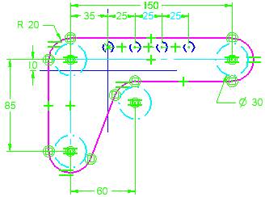

Sketch command (Assembly environment)
Note:
Assembly sketch geometry can be associatively linked to drive the creation of ordered part geometry only.
The Sketch command in an assembly opens the sketch environment, so you can draw a layout on an assembly reference plane.

You can position the new assembly reference plane using an existing assembly reference plane or a face or reference plane on a part within the assembly.
For more information on working with assembly sketches, see the Assembly layouts Help topic.